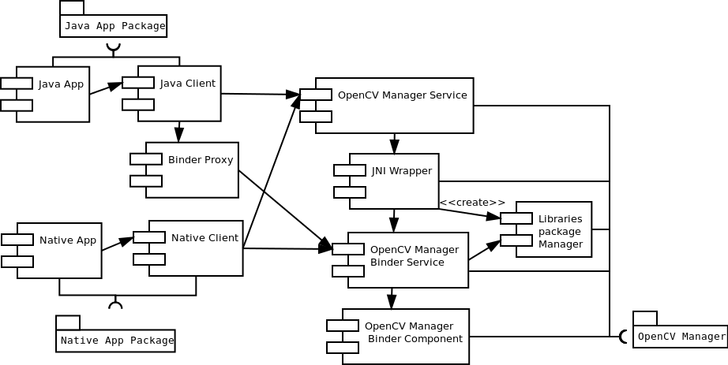

Introduction¶
OpenCV Manager is an Android service targeted to manage OpenCV library binaries on end users devices. It allows sharing the OpenCV dynamic libraries between applications on the same device. The Manager provides the following benefits:
- Less memory usage. All apps use the same binaries from service and do not keep native libs inside themselves;
- Hardware specific optimizations for all supported platforms;
- Trusted OpenCV library source. All packages with OpenCV are published on Google Play market;
- Regular updates and bug fixes;
Usage model for end user¶

First OpenCV app:
- Any OpenCV-dependent app is installed from Google Play marketplace or manually;
- At the first launch, it suggests installation of OpenCV Manager;
- Then OpenCV Manager is downloaded and installed, using the Google Play application.
- When Manager has been started, the application suggests installation of OpenCV library for the target device architecture if it is necessary;
- After the installation is finished, the app may be launched.
Subsequent launches of OpenCV apps:
- Any OpenCV-dependent app is installed from Google Play market or manually;
- At the first launch, the app starts as usually;
- If the selected OpenCV version is not installed, OpenCV Manager suggests installing OpenCV library for the target device through Google Play marketplace;
- After the installation is finished, the app may be launched.
Architecture of OpenCV Manager¶
Help and Feedback
You did not find what you were looking for?- Ask a question on the Q&A forum.
- If you think something is missing or wrong in the documentation, please file a bug report.